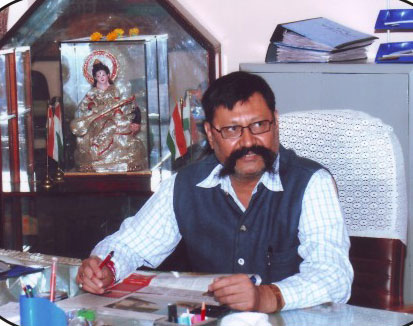

Education is integral for the growth and development of an individual. The expectation from an educational institution is always about making the society better for all and to bring one’s true potential in the service of mankind. The school fervently believes that education is the is the sole answer to the quest of the children to achieve excellence through the nurturing of their abilities to predict, infer, analyses and them in the end arrive at the entrepreneurial answers. It is the constant endeavor of the school to initiate the process of continued learning. Education is a lifelong never ending process where there is no consumption but only investment of mind and intellect. A mighty river and Oxford share a common chord-starting with a humble beginning and going through meandering course till they reach their destination. Forty years ago Oxford laid its humble foundation, struggled hard and has carved a niche for itself earning the rightfully deserved recognition. The conducive environment, matching infrastructure and competent faculty of the school harmonizes into a perfect blend of excellence in contemporary education. With the untiring attempts of our staff, constant support of parents and zealous performance of our students the institution is sure to stay steadfastly at the pinnacle of success. Come watch our Oxford Falcons soar to success. We believe, “Today we write and read, tomorrow we succeed”.